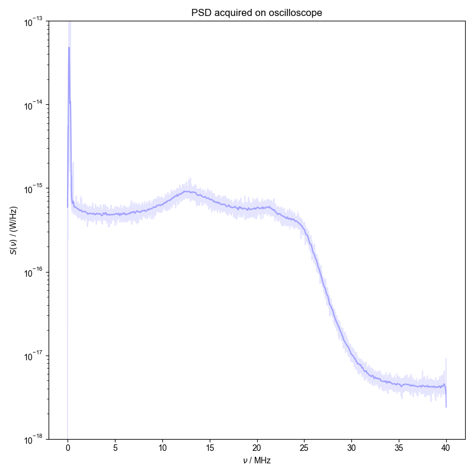

Note
Go to the end to download the full example code
Generate a PSD from Oscilloscope Data¶
Here, data containing the noise signal acquired on the oscilloscope is converted to a power spectral density and convolved to display a smooth spectra illustrating the noise power.
You didn't set units for capture before saving the data!!!
1: PSD acquired on oscilloscope |||MHz
from numpy import r_
from pyspecdata import figlist_var, find_file
from pylab import diff, sqrt, ylim, ylabel
import re
lambda_G = 0.1e6 # Width for Gaussian convolution
filename = "240328_RX_GDS_2mV_analytic.h5"
nodename = "accumulated_240328"
with figlist_var() as fl:
# Load data according to the filename and nodename
s = find_file(
re.escape(filename),
expno=nodename,
exp_type="ODNP_NMR_comp/noise_tests",
)
# Calculate $t_{acq}$
acq_time = diff(s.getaxis("t")[r_[0, -1]])[0]
s.ft("t") # V_p√s/√Hz
# Instantaneous V_p*√s/√Hz -> V_rms√s/√Hz
s /= sqrt(2)
# {{{ equation 21
s = abs(s) ** 2 # Take mod squared to convert to energy
# V_rms^2 s/Hz
s.mean("capture") # Average over all captures
s /= acq_time # Convert to power V_rms^2/Hz = W
s /= 50 # Divide by impedance -> W/Hz
# }}}
s.set_units("t", "Hz")
# Plot unconvolved PSD on a semilog plot
fl.next("PSD acquired on oscilloscope")
fl.plot(
s["t":(0, 49e6)],
color="blue",
alpha=0.1,
plottype="semilogy",
)
# Convolve using the lambda_G specified above
s.convolve("t", lambda_G, enforce_causality=False)
# Plot the convolved PSD on the semilog plot with the unconvolved
fl.plot(
s["t":(0, 49e6)],
color="blue",
alpha=0.3,
plottype="semilogy",
)
ylim(1e-18, 1e-13) # set y limits
ylabel(r"$S(\nu)$ / (W/Hz)")
Total running time of the script: (0 minutes 1.171 seconds)